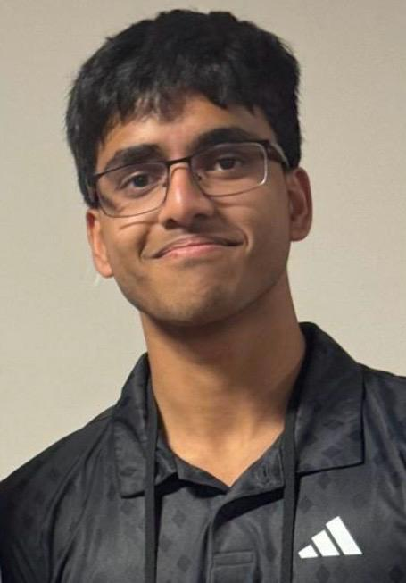

Six
lines of
inquiry
Theoretical CS, machine learning, spatial modelling and cyber law: two CREST Golds, one published paper, three manuscripts under review. Scroll →
> theorem prover
> data scientist
> cybersecurity & policy researcher
> clarinettist, swimmer, captain
IB Diploma · The British School, New Delhi · Intended major: Computer Science

A Year-12 record built across mathematics, computing, law, music and sport, at full intensity in each.
Theoretical CS, machine learning, spatial modelling and cyber law: two CREST Golds, one published paper, three manuscripts under review. Scroll →
Products and programmes used outside the classroom: screening eyes, auditing privacy policies and teaching digital safety across India.
A free AI eye-screening app built for low-bandwidth settings, using statistical and time-series analysis with the Gemini API. Partnered with NGOs including the VisionSpring Foundation, raised INR 35,000 in seed funding, and was an Inventure Changemakers finalist (top 25 of 200+). iOS and Android release in progress.
A national digital-privacy rights initiative running workshops on data protection with NGO and corporate partners, commended by MeitY. Won a COBIS Student Achievement Award for significant contribution to the wider community.
A browser extension that scores privacy policies for readability and privacy-risk exposure, with breach alerts. Published and publicly available.
Low-cost cybersecurity training modules and a web platform for a Delhi non-profit serving underserved youth.
Runs the school's community service initiatives, including life-skills and financial-literacy support for underprivileged women.
Mentored 10+ members through 20+ sessions on advanced ML and computational modelling. The club's air-quality study won CREST Gold, and its newsletter reaches more than a thousand readers.
Led a Wharton Global High School Data Science team, building an ensemble of heuristic neural networks, XGBoost and Poisson modelling, to the semi-finals (about 20 teams from 600+ entries). 1st place in Advanced Coding at the FOBISIA Hackathon, and 2nd at TISB two years running.
All ten activities, with roles, grade levels and the hours behind them. Click any row to expand it.
Top scorer in the Year 12 cohort in Mathematics AA, Computer Science, Economics, English and French. Director's Award for Academic Excellence in Years 10, 11 and 12.
IB Theory of Knowledge: A. CAS/TOK bonus predicted: 3.
IGCSE 2025: the only student in the school to score A* in all ten subjects. Subject Awards in all ten in Year 10.
Wind instruments and freestyle sprints both run on breath control.
A tiny shell. Type help, or tap a command below.